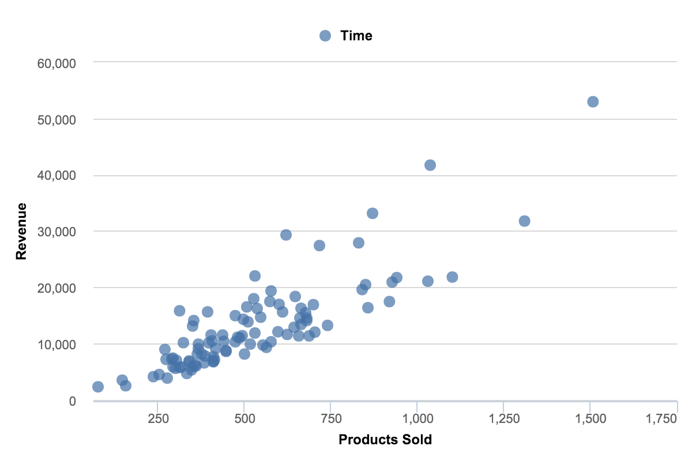

About Data Visualisation:
Explanation:
Data Visualisation refers to the representation of data through simple graphics, and concise visuals which are used to illustrate and convey more complicated relationships between sets of data. Thus, making crucial data more accessible towards larger audiences.
Significance:
It is unlikely that a business or enterprise will not benefit from making data more accessible. Data visualisation is a powerful tool for communicating and demonstrating the importance of certain key sets of data within a business to non-technical audiences, providing a platform for sharing and analysing information using appropriate visual elements.
Benefits:
There are clear benefits when working with and displaying data graphically:
The conception and demonstration of ideas: Through the use of data visualization comes the opportunity for group/team discussions. This engagement with between a team and visuals allows for the generation of ideas and sparks collaboration within the group/team, finding commonalities within the data and subsequently building a foundation on which a projects key points are highlighted, and priorities established.
Data visualization is often crucial in demonstrating ideas, especially with regards to business process and strategies. With the use of data modelling, the flow of data through a company – especially through already established information systems as well as databases – can be easily and clearly visualized.
Discovery:
We as humans find ourselves drawn towards visual stimuli such as colours and patterns. Data visualization takes advantage of these inherit qualities to make it easier to spot and identify patterns and therefore trends as well as outliers within the datasets. Therefore, the more effective the visuals are, the faster trends can be identified and internalized with the added benefit of discovered insights being easily explained.
Decision making:
From what has been discussed so far, we can gather that using data visualization effectively promotes teamwork and group comradery through accessibility and discovering new opportunities through the clear visualization of patters, trends, and outliers. This environment is optimized towards making correct and calculated predictions, furthering a business’s ability to form conclusions from which correct and calculated decisions can be made.
Disadvantages:
As critical as data visualisation is to a business, there are some definite (albeit preventable) problems that may arise when using data visualisation to convey information.
Inaccurate/bias data:
Ensuring the data used in visual elements is accurate and provided reliably is of utmost importance. Inaccurate or tampered data may lead to incorrect business decisions based on false predictions.
Irrelevant data:
The addition of data irrelevant to the core message being conveyed may serve to further confuse and distract the audience being presented to.
Types of Data Visualisation
Tables
Plots
Maps
Others
Dashboards:A culmination of graphs and charts used to illustrate and convey different types of related data in one place. Let’s the audience grasp relationships between a broad range of related sets of data.

Gantt Chart: Catered towards scheduling, Gantt charts are specialized bar charts used to keep track of projects. Includes information from start/finish dates to planning and resources
Geospatial: Refers to data related to and about geographical locations and allows to monitor situations worldwide.
Things to Consider
As useful as all the mentioned data visualization methods and graphics are, it is important to understand how to implement them effectively when presenting them.
- Know your audience: Identify who the data visuals will be presented to. Understanding the needs will help guide the development of the graphics by considering the audiences’ concerns, questions, and goals.
- Contextualize: Having the audience understand the significance of information being presented through data visualization is pivotal. Comparisons to something tangible within the market of a business can aid in forwarding the importance of the data, as well as the form of visualization being used.
- Simple and deliberate: Integration of any sort of additional data to the main sets of data of the presentation must be very calculated, with a focus on the intended conclusion using clear and concise communication
Conclusion
Data visualization is a key and highly sought after skill and an increasingly important aspect of information systems due to the applications throughout businesses and industries. Optimising the sharing and communication of decision-defining information through the implementation of data visualisation is a crucial skill to possess in the currently data-driven world.